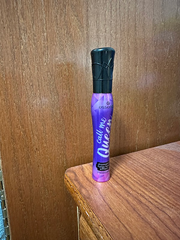
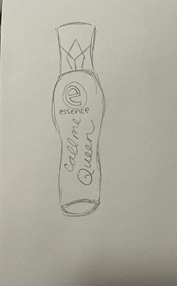

Item of the Week: Mascara Mess

Description
The item that I decided to choose for this project is a mascara by essence called “Call me Queen”. It is one of the best mascaras that I have found and is satisfying to both look at and feel. From a glance, it looks like any ordinary mascara, purple bottle with a black top. The mascara itself is the deepest shade of black. But, what makes it special is that the bottle has a nice curve to it that allows you to grab it easier. The wand has almost a rubbery feel with patterns etched into it that again allows the user to get a good hold on it.
I acquired this bottle of mascara in my desperate search for a good, long lasting mascara that would not make my lashes drop in 0.5 seconds. It indeed served this purpose and made my lashes look sky high.
Unfortunately, with all good things, time ran its course and the mascara lost its shine. It got goopy and made my lashes clump together which is why it now finds itself in my trash can.

Anecdote
Any fellow Asian female can tell you that one of the biggest struggles when it comes to makeup is finding a mascara that will not make your straight, short lashes look even shorter and straighter than they already are. I found myself scanning countless websites researching the best mascaras for Asian lashes. I combed through so many beauty aisles looking at hundreds of mascara bottles.
On one such trip a few months ago, I found this purple mascara bottle by essence called “Call me Queen”. It caught my eye for being aesthetically pleasing, but it turned out to be much more. I rushed home to try it and upon the first sweep on my lashes, it made me look like I had gotten extensions. What was once short stubby lashes were replaced with dark, long wisps. I sat back on my bed and called my fellow Asian sister in to look at them. She was astounded. This was not an everyday find, this was a jackpot. The secret hack for Asian lashes.
I wore that mascara everyday for weeks, soaking in the compliments. That was until a few days ago, I went to put it on and it clumped all of my lashes together in one giant black mess. What I thought was the cream of the crop was only a temporary fix. Once again, I find myself researching…desperately searching for the perfect mascara.

Research
This mascara has gained a lot of attention on online platforms like “TikTok” for its ease and accuracy in application. Many users have positive reviews about its lengthening effect and ability to separate individual lashes. However, some users have complaints similar to mine. The following facts provide some insight into how the mascara works.
Fact #1
The mascara has synthetic beeswax which helps it stay on without being too stiff which is what gives it that natural look and comforting feel. (Allure)
Fact #2
It uses a “elastomer” brush is which is short and flexible, allowing for a small amount of product to coat your lashes. (WWD)
Fact #3
Customers have complained about clumping and smudging before. (Sustai Market)